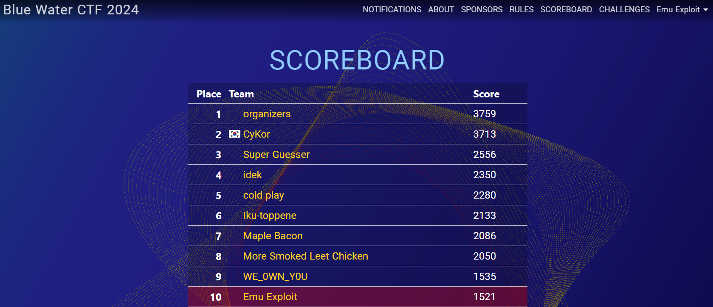
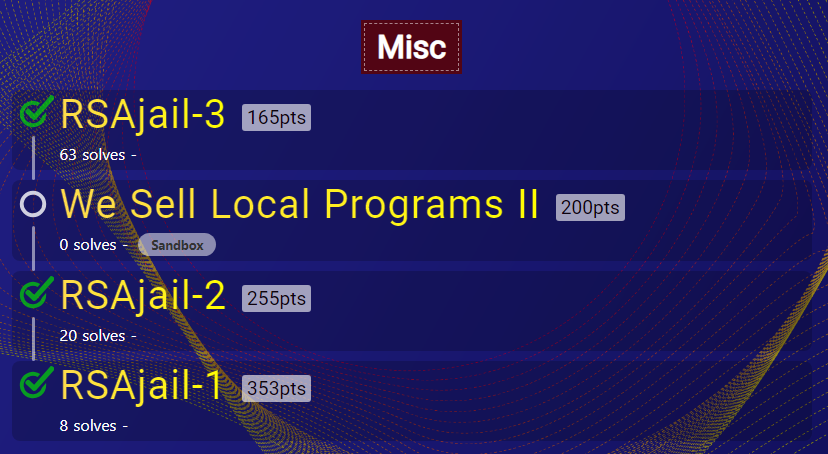
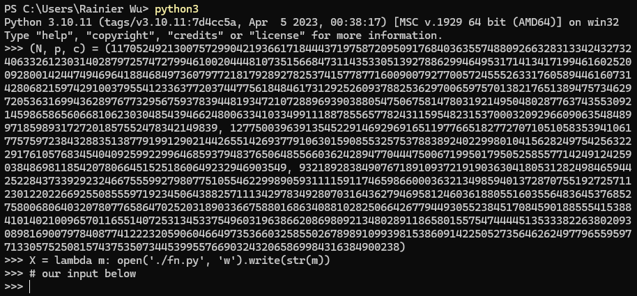
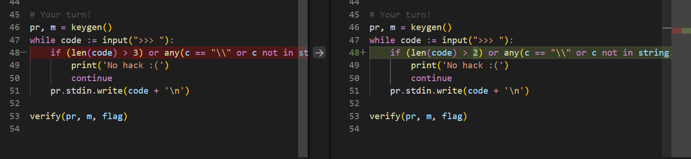
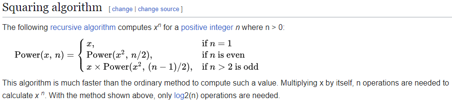
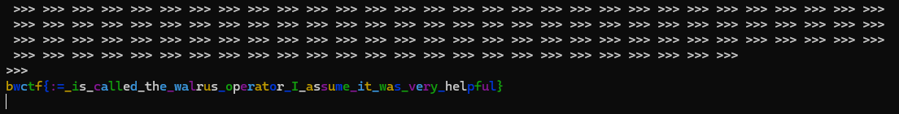
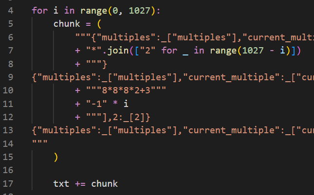

RSAjail Writeups - Blue Water CTF 2024
RSAjail Writeups - Blue Water CTF 2024

Overview⌗
Last weekend I played Blue Water CTF with my team Emu Exploit. We just mananged to get top 10!
I wasn’t planning on playing CTFs at all, but the series of misc challenges, RSAjail, caught my attention, so I proceeded to spend the entirely of Sunday solving them.
In this post, I will go through each of the challenges, RSAjail-3, RSAjail-2, and RSAjail-1, all made by soon haari. I recommend reading in order, since some techniques from the previous parts may be used in later parts.
Challenges Overview⌗
RSAjail-3 - 63 solves⌗
Let’s learn about RSA!
nc rsajail3.chal.perfect.blue 1337
We are given the Python source file that runs on the server:
from subprocess import Popen, PIPE, DEVNULL
from Crypto.Util.number import getPrime
from secret import fname, flag
import time, string, secrets, os
def keygen():
pr = Popen(['python3', '-i'], stdin=PIPE, stdout=DEVNULL, stderr=DEVNULL, text=True, bufsize=1)
p, q = getPrime(1024), getPrime(1024)
N, e = p * q, 0x10001
m = secrets.randbelow(N)
c = pow(m, e, N)
pr.stdin.write(f"{(N, p, c) = }\n")
pr.stdin.write(f"X = lambda m: open('{fname}', 'w').write(str(m))\n")
# X marks the spot!
return pr, m
def verify(pr, m, msg):
time.sleep(1)
assert int(open(fname, 'r').read()) == m
os.remove(fname)
pr.kill()
print(msg)
# Example!
pr, m = keygen()
example = [
"q = N // p",
"phi = (p - 1) * (q - 1)",
"d = pow(0x10001, -1, phi)",
"m = pow(c, d, N)",
"X(m)"
]
for code in example:
pr.stdin.write(code + '\n')
verify(pr, m, "I showed you how RSA works, try yourself!")
# Your turn!
pr, m = keygen()
while code := input(">>> "):
if (len(code) > 3) or any(c == "\\" or c not in string.printable for c in code):
print('No hack :(')
continue
pr.stdin.write(code + '\n')
verify(pr, m, flag)
Basically, it generates RSA values N, p, c, and writes it to a Python interpreter. It also defines the function X(m) as writing m to a file.
def keygen():
pr = Popen(['python3', '-i'], stdin=PIPE, stdout=DEVNULL, stderr=DEVNULL, text=True, bufsize=1)
p, q = getPrime(1024), getPrime(1024)
N, e = p * q, 0x10001
m = secrets.randbelow(N)
c = pow(m, e, N)
pr.stdin.write(f"{(N, p, c) = }\n")
pr.stdin.write(f"X = lambda m: open('{fname}', 'w').write(str(m))\n")
# X marks the spot!
return pr, m
Like this:
We can input characters into interpreter, and our goal is to decrypt find m by decrypting c, and write it to a file. If the written value is equal to m meaning we successfully decrypted, we get the flag.
The server gives us an example of how to do this:
example = [
"q = N // p",
"phi = (p - 1) * (q - 1)",
"d = pow(0x10001, -1, phi)",
"m = pow(c, d, N)",
"X(m)"
]
It seems simple enough. We find q by dividing N by p, calculate d = pow(e, -1, (p-1)*(q-1)) and m = pow(c, d, N).
But the trick is, each line of our input must be 3 characters or less.
# Your turn!
pr, m = keygen()
while code := input(">>> "):
if (len(code) > 3) or any(c == "\\" or c not in string.printable for c in code):
print('No hack :(')
continue
pr.stdin.write(code + '\n')
verify(pr, m, flag)
You might see why this challenge, the easiest one, is called RSAjail-3 and not RSAjail-1.
So with the 3 character restriction, my first thought was how to get multiline input. \ is banned, and we also can’t use if/for/while statements, since those would be longer than 3 characters.
But there is something we can use that allows the interpreter to keep taking input for the same chunk of code, despite pressing enter - brackets.
If you enter any bracket ([, ( {), but don’t close it, the interpreter will keep requesting input, even newlines, until you close that bracket and any other brackets.
What’s even better is that you can use operators within the brackets, across multiple lines:
>>> [
... 1
... +
... 1
... ]
[2]
>>>
This also works with the walrus operator :=, which allows you to simultaneously assign and use a value:
>>> [
... a
... :=
... 3
... ]
[3]
>>> a
3
>>>
This allows us to assign variables!
Using this, we can easily calculate q and totient(N).
>>> [
... q
... :=
... N//
... p
... ]
[91626188501171632213608812997587612695436932752806703465409540571820540906554149309244741450621658939480220966409120116938831715942853207836601892475627420413669286617497654823778323191912299860409614215694474166835113649175038751310702932807349441577883399801632439533079906231771493803222831648878548449211]
>>> [
... Q
... :=
... q
... -1,
... P
... :=
... p
... -1
... ]
[91626188501171632213608812997587612695436932752806703465409540571820540906554149309244741450621658939480220966409120116938831715942853207836601892475627420413669286617497654823778323191912299860409614215694474166835113649175038751310702932807349441577883399801632439533079906231771493803222831648878548449210, 127750039639135452291469296916511977665182772707105105835394106177575972384328835138779199129021442655142693779106301590855325753788389240229980104156282497542563222917610576834540409259922996468593794837650648556603624289477044475006719950179505258557714249124259038486981185420780664515251860649232946903548]
>>> [
... tn
... :=
... Q*P
... ]
[11705249213007572990421936617184443719758720950917684036355748809266328313342432732406332612303140287972574727994610020444810735156684731143533051392788629946495317141341719946160252009280014244749469641884684973607977218179289278253741577877160090079277005724555263317605894461607314280682159742910037955412117000975604468533979539203011161347521916591546685760837414004640079221338837551868970422318034227972970869199303925502934739469307563027000999481400011577091796266839247077556279926204231514294027076386121125282895365411259105559248355360129100123018102383167074612615423808066046773408727165254366846797080]
>>>
However, we encounter a problem when we try to use the pow function to calculate d, since its already 3 characters long. But we can simply assign pow to a one character variable, and call the variable.
>>> [
... a
... :=
... pow
... ,
... d
... :=
... a(
... 2
... **
... 16
... +1,
... -1,
... tn)
... ]
[<built-in function pow>, 11648274153133770164782304077079131643426221263972252582251998502261797151831282755421764809331922475868522797966835166598557555662429845670673643067807328194005395323619089849225312656075559897677203886421950724152235503840836293226002383783093927930638994145964038070824438485086375982384440760381263337901756970407967594318462511066145565417438765220676743701272479157645554216050113790039069731643766975600671592343869927116749284201432788279825917942199764332129526358098814652853585977801662738593891357061660551271798677714748864707921620456793866851137442989843756535782118649227939003435774726697274776300593]
>>> d == pow(0x10001, -1, (p-1)*(q-1))
True
>>>
Doing the same for m = pow(c,d,n), we can get the flag.
Payload:
[
q:=
N//
p,
a:=
pow
,
x:=
p-1
,
y:=
q-1
,
t:=
x*y
,
e:=
2**
16
+1
,
d:=
a(
e,
-1,
t
)
,
m:=
a(
c,
d,
N,
)
,
X(
m
)
]
Flag:
bwctf{Lmao_pow_function_is_too_powerful...Time_to_ban_it!!!!}
RSAjail-2 - 20 solves⌗
Let’s learn about RSA again!
nc rsajail2.chal.perfect.blue 1337
The source code is almost the exact same as RSAjail-3, except this time we are restricted to max 2 characters.
This isn’t a problem for most of our code, as we can actually make every line 2 characters long, since none of the operators are more than 2 characters.
Except for the pow function.
As hinted by in the previous flag, we can no longer use pow, as it is longer than 3 characters.
>>> [
... po
... w
File "<stdin>", line 2
po
^
SyntaxError: invalid syntax. Perhaps you forgot a comma?
>>> [
... po
... w,
File "<stdin>", line 2
po
^
SyntaxError: invalid syntax. Perhaps you forgot a comma?
>>>
After thinking for a while, I came to the sad conclusion that we really couldn’t use pow at all.
Which leaves only one solution - to implement pow itself.
There are 2 main components of pow we need to implement:
- Modular inverse - to calculate
d,d = pow(e, -1, tn), or $d = e^{-1} \bmod{\varphi(N)}$ - Modular exponentiation - to calculate
m,m = pow(c, d, N), or $m = c^d \bmod{N}$
Each of these have their own algorithms which we must implement.
Modular Inverse⌗
The modular inverse of $e$ modular $\varphi(N)$ is $d$ such that $d \times e = 1 \bmod{\varphi(N)}$, or $d = e^{-1} \bmod{\varphi(N)}$.
The smallest, “simplest” implementation of modular inverse I could find was this:
def invmod(e, t):
if t % e == 0:
res = 1
else:
res = t - invmod(t % e, e) * t // e
return res
However, this used recursion, which would be hard, if not impossible, to implement with our current constraints.
My thought was to find another implementation that used loops instead of recursion, and ChatGPT came up with this:
def modular_inverse(a, m):
# Extended Euclidean Algorithm
m0, x0, x1 = m, 0, 1
while a > 1:
# q is the quotient
q = a // m
# Update m and a
m, a = a % m, m
# Update x0 and x1
x0, x1 = x1 - q * x0, x0
# Make x1 positive
if x1 < 0:
x1 += m0
return x1
The code seems longer and more complex, but for our purposes, its significantly better than recursing. The most tricky part is the while loop.
Currently, the method I thought of for having conditionals was by indexing a list with a boolean value:
[false_value, true_value][statement]
e.g
if a == b:
a += 1
becomes
a = [a, a+1][a == b]
As if a == b is True, True == 1, then a+1 is indexed in the list.
This comes in useful later, especially in RSAjail-1, but for now, I couldn’t figure out how to implement the while loop. So I settled for an easy, but bad solution - loop a constant amount of times.
After doing some testing, I found that when calculating modular_inverse(e, tn), the most common number of times the while loop looped was around 10 - around 20% of the time, the while loop looped 10 times.
Also, looping additional times doesn’t work since a becomes zero and causes an error, and we get incorrect values - it has to be the exact amount of loops.
So if we just assume the number of times it should loop to be 10, we can ignore the whole while loop and simply repeat the code 10 times. Yes, this is a bad solution because it means our code will only work 20% of the time which means we need to run it multiple times, but hey, we only need one to succeed to get the flag.
For readibility purposes, from now on I will remove newlines to make the code more readible, but keep in mind that all of it can be split into 1 or 2 characters per line.
As such, the code for modular inverse is shown below (the params N, p, c used to test the code are specifically chosen to require exactly 10 iterations for modular inverse):
# testing code (initial params)
(N, p, c) = (19658816114015959168822661506934810897746960941508301523029898136829954236422356288230696714218497509145448247127171276213685927588540138953910488498609797415885703059377908419410932089341671694572542346075296204447444635775115780432725985759675826220650952905101702667277980946442594098014568732789802673665948374898957822760563388032882144793699908413806535153648788672441229731217180934020288215355778531902884992191186932322134304183424209934547418908138707378543224870398215257997452996156391765986265663605807716031637406873668707844344556614477347738848967105230266893964009548166816589883344551162998406852921, 130453368488282617461032810074522133815958556838372320878351037317254582579520496442111308634980986173256623006744002301860206808920405156266044823886359095797043398827547968038679184174328667197382367501477538816429160786329587127876859248437805001084458927041274502045315450217629728195086234876359956231457, 13744931957300834343941499214006421832495560668326408947644526682079295296305397660682804331317391989884003392518865595292355407089611107473270751078128872540223442273373149271630197488186365946706676562083273458975899416720247794630700231499328623744814876504110721712986876341468298674650169917173229382920193142678531197592139459588909453925413821274674689810706722906260374211405950154749723078233574515629772740102349908848284048531666223469582108155571783981605954997368045859488344919296326481276368474768862732504806729887028262252937842921369526516806823341787109372303286419458445259998500379305959543029395,)
X = lambda m: open("./fn.py", "w").write(str(m))
# actual code
[q:=N//p,Q:=q-1,P:=p-1,t:=Q*P,e:=2**16+1]
[a:=e,m:=t,m0:=m,x0:=0,x1:=1]
[q:=a//m,M:=m,m:=a%m,a:=M,X0:=x0,x0:=x1-q*x0,x1:=X0]
[q:=a//m,M:=m,m:=a%m,a:=M,X0:=x0,x0:=x1-q*x0,x1:=X0]
[q:=a//m,M:=m,m:=a%m,a:=M,X0:=x0,x0:=x1-q*x0,x1:=X0]
[q:=a//m,M:=m,m:=a%m,a:=M,X0:=x0,x0:=x1-q*x0,x1:=X0]
[q:=a//m,M:=m,m:=a%m,a:=M,X0:=x0,x0:=x1-q*x0,x1:=X0]
[q:=a//m,M:=m,m:=a%m,a:=M,X0:=x0,x0:=x1-q*x0,x1:=X0]
[q:=a//m,M:=m,m:=a%m,a:=M,X0:=x0,x0:=x1-q*x0,x1:=X0]
[q:=a//m,M:=m,m:=a%m,a:=M,X0:=x0,x0:=x1-q*x0,x1:=X0]
[q:=a//m,M:=m,m:=a%m,a:=M,X0:=x0,x0:=x1-q*x0,x1:=X0]
[q:=a//m,M:=m,m:=a%m,a:=M,X0:=x0,x0:=x1-q*x0,x1:=X0]
[d:=[x1,x1+m0][x1<0]]
# testing code (to validate)
q = N//p
assert d == pow(0x10001, -1, (p-1)*(q-1))
Modular Exponentiation⌗
Modular exponentiation is simply calculating $m$ where $m = c^d \bmod{N}$. Since $d$ is a very large number, we can’t just simply multiply $c$ together $d$ times - this is infeasible. But the result is done modulo $N$, which will be small.
There exists the exponentiation by squaring algorithm,
It is another recursive algorithm, but this time its much more simple, and we can reduce it into a while loop as well:
def exp(c, d, n):
r = 1
for _ in range(2048):
if d % 2 == 1:
r = (r * c) % n
c = (c * c) % n
d = d // 2
return r
What this does is go through each bit of $d$. If the bit is 1, it multiplies the result $r$ by $c^{2^i} \bmod{N}$ where $i$ is the position of the bit starting at 0.
The amount of times we need to loop is simply the bitlength of $d$, which will be less than or equal to the bitlength of $N$, which is 2048, so we will loop for a maximum of 2048 times. This time, it doesn’t matter if we loop more than we need to, since if we do, the higher bits of $d$ will just be 0, so the result won’t change.
Implementing this is pretty simple, but it just takes a lot of lines since we’re looping 2048 times:
[r:=1]
[
r:=[r,(r*c)%N][d%2==1],
c:=(c*c)%N,d:=d//2
]
[
r:=[r,(r*c)%N][d%2==1],
c:=(c*c)%N,d:=d//2
]
[
r:=[r,(r*c)%N][d%2==1],
c:=(c*c)%N,d:=d//2
]
... (repeated 2048 times in total)
[m:=r]
Final solve⌗
Now that we have modular inverse and modular exponentiation algorithms implemented, we can simply combine them to get the flag. Keep in mind we need to run this a few times on remote, since we hardcoded loop amount for modular inverse.
The final code turned out to be ~70000 lines long, with ~200k characters. Believe it or not, this is nothing compared to RSAjail-1…
I decided to manually copy and paste it into the terminal. It lagged for a bit, but eventually processed and pasted the characters.
Flag: bwctf{:=_is_called_the_walrus_operator_I_assume_it_was_very_helpful}
RSAjail-1 - 8 solves⌗
Time for the final challenge. You guessed it, exact same source as previous times, except we are only allowed ONE character per line.
This means we can no longer use operators that aren’t 1 character long.
We now have 2 very big problems to tackle:
- We can no longer store variables, since the walrus operator
:=is 2 characters long - We can no longer perform integer division, since
//is 2 characters long
Singular variable⌗
With no walrus operator, there seems to no way to store values across multiple expressions. Without being able to store values, solving the challenge is impossible.
But actually, there is still a variable we can use and modify. In the Python interpreter, _ is a special variable which stores the result of the last expression:
>>> 1+1
2
>>> _
2
>>> _ + 1
3
>>>
We can abuse this by setting _ to a dictionary, and indexing _ to retrieve previous values.
For example, we can calculate (p-1)*(q-1) like this:
>>> {
... 1
... :
... p
... -
... 1
... ,
... 2
... :
... q
... -
... 1
... }
{1: 130453368488282617461032810074522133815958556838372320878351037317254582579520496442111308634980986173256623006744002301860206808920405156266044823886359095797043398827547968038679184174328667197382367501477538816429160786329587127876859248437805001084458927041274502045315450217629728195086234876359956231456, 2: 150696117254969335819306125948039770222551358810181509713201480554139338362396967781188614953302019959221233518074437714525269530003480482301144411821795677909740495479721830825842680697306040107729861936962506057445590196810051637125467630512958374263647444393642284997681698662489843408404877087566659920152}
>>> {
... 3
... :
... _
... [
... 1
... ]
... *
... _
... [
... 2
... ]
... }
{3: 19658816114015959168822661506934810897746960941508301523029898136829954236422356288230696714218497509145448247127171276213685927588540138953910488498609797415885703059377908419410932089341671694572542346075296204447444635775115780432725985759675826220650952905101702667277980946442594098014568732789802673665667225413214570807283049096859582889661398498157981323057236154569835810275263469796988291767495525770407135666368492305748827844500324295980229672430552604836440976090945459132931131284757058681153434167367671157762655890529069079342229735526584363500860733795350106921012399286697018279853439199071790701312}
>>>
In the example above, we used dictionary key 1 to store p-1 and key 2 to store q-1. Then we calculated (p-1)*(q-1) through _[1]*_[2], storing it in key 3. (Yes, I could’ve used () brackets to do it in one go, but I wanted to illustrate an example of persisting values across expressions)
If we want certain values to persist, we can simply assign the key to its previous self, such as {1:_[1]}. Doing this, we can now keep track of values across multiple expressions.
From now on, I will condense all expressions into a single line, without newlines, for readibily. But keep in mind that every character will be on its own line, thus operators and values 2 chars or longer can’t be used.
Integer division - calculating q = N // p⌗
Okay, so // is banned, so we can’t divide two integers. Which is tragic, as some parts of our solution from RSAjail-2 requires integer division. Including the simplest one, q = N // p.
But how hard is it to divide numbers without //?
We could use /, which would output a float, but for our purpose, dividing two large integers results in a lot of precision lost, and there is also no way to convert it back into an integer.
Which leaves us with only one choice - to implement integer division manually.
This turned out to be extremely tricky - we need something that doesn’t have too many conditions/loops, since those are hard to implement, and also no bitshifts, as >> and << are too long.
I asked ChatGPT until it gave me something I was looking for, and modified it to become this:
def divide(dividend, divisor):
quotient = 0
multiples = []
# Precompute multiples of the divisor to avoid the inner loop
current_multiple = divisor
current_quotient = 1
times = divisor.bit_length()
for _ in range(times):
multiples.append((current_multiple, current_quotient))
current_multiple += current_multiple # Double it
current_quotient += current_quotient # Double the corresponding quotient
# Now, subtract the largest possible multiples
for i in range(times):
multiple, multiple_quotient = multiples[times - 1 - i]
if dividend >= multiple:
dividend -= multiple # 3
quotient += multiple_quotient # 9
return quotient
It’s kinda confusing how it divides, but it does work. The main things to note is that the times we iterate depends on the size of the divisor, which in the case of q = N // p, p has bitlength 1024 so we will loop that many times. It also doesn’t matter if we loop too many times, which is good, so I settled with 1028 times just in case.
Notice the multiples list is just $\text{divisor} * 2^i$ (current_multiple) and powers of 2, $2^i$ (current_quotient), for $i$ being from 0 to the bitlength of the divisor.
Since we know the powers of 2, we can pre-compute them, so instead of having a list of tuples, we can just have a list of multiples of the divisor ($\text{divisor} * 2^i$).
And we do have a way to append elements onto lists, using [a] + [b] = [a, b]:
>>> {1:[]}
{1: []}
>>> {1:_[1]+[2]}
{1: [2]}
>>> {1:_[1]+[3]}
{1: [2, 3]}
>>>
You may be wondering why we can’t compute the multiples of the divisor during the second loop, eliminating the need for a list. This is because in the second loop, we loop backwards through the multiples, going from e.g. $\text{divisor} * 2^{1027}$, $\text{divisor} * 2^{1026}$ … $\text{divisor} * 2^0$. And to go from $\text{divisor} * 2^{1027}$ to $\text{divisor} * 2^{1026}$, we need integer division, dividing by 2 (// 2) - the thing we are literally trying to implement. So it makes more sense to start from $\text{divisor}$, and keep doubling it, 1028 times.
Our first step is to generate the list of divisor multiples, $\text{divisor} * 2^i$:
{8:[],7:p}
{8:_[8]+[_[7]],7:_[7]*2}
{8:_[8]+[_[7]],7:_[7]*2}
{8:_[8]+[_[7]],7:_[7]*2}
... (repeated 1028 times)
Then, we do the second loop.
{"multiples":_[8],"current_multiple":_[7],"current_quotient":1,"dividend":N,"quotient":0}
# iteration 0
{
"multiples": _["multiples"],
"dividend": _["dividend"],
"quotient": _["quotient"],
2: 2**1027,
}
{
"multiples": _["multiples"],
"dividend": _["dividend"],
"quotient": _["quotient"],
"multiple": _["multiples"][1027],
2: _[2],
}
{
"multiples": _["multiples"],
"dividend": [_["dividend"] - _["multiple"], _["dividend"]][
_["dividend"] < _["multiple"]
],
"quotient": [_["quotient"] + _[2], _["quotient"]][_["dividend"] < _["multiple"]],
"multiple": _["multiple"],
2: _[2],
}
# iteration 1
{
"multiples": _["multiples"],
"dividend": _["dividend"],
"quotient": _["quotient"],
2: 2**1026, # note how this changed
}
{
"multiples": _["multiples"],
"dividend": _["dividend"],
"quotient": _["quotient"],
"multiple": _["multiples"][1026], # note how this changed
2: _[2],
}
{
"multiples": _["multiples"],
"dividend": [_["dividend"] - _["multiple"], _["dividend"]][
_["dividend"] < _["multiple"]
],
"quotient": [_["quotient"] + _[2], _["quotient"]][_["dividend"] < _["multiple"]],
"multiple": _["multiple"],
2: _[2],
}
... (repeated 1027 times with modifications)
There are many things to note here:
- The dictionary keys are now strings. This is purely for readibility - in the final code, they will be replaced with unique numbers as keys, since obviously we can’t have strings as a quote is already 1 character, so keys must be integers.
- There are numbers which are longer than 1 digit, which can’t happen. However, in the final code, this is replaced with expressions that evaluate to that number. For example,
2**1027has**as the operator, which is 2 characters so can’t actually be used. However, we can simply express it as2*2*2... (repeated 1027 times total). Similarly with1027, we can write1027 = 8*8*8*2+3, and1026 = 8*8*8*2+3 - 1etc. - We are again using the list indexing trick for the conditionals, but we are checking for
dividend < multipleinstead ofdividend >= multiplelike in the original code. This is because>=is 2 characters long, so we must use the one character operator<instead, and swap the list elements.
Yes, there are a lot of redundant parts that could be easily golfed, but I didn’t really care about the size at that time.
To repeat those 3 lines 1028 times, I used a script to format it:
And thats how you turn one line of code, q=N//p, into almost 800k lines.
That’s not the end either - there’s still other places that use integer division, such as modular inverse.
Integer division - in modular inverse algorithm⌗
Recall our modular inverse algorithm was based off this:
def modular_inverse(a, m):
# Extended Euclidean Algorithm
m0, x0, x1 = m, 0, 1
while a > 1:
# q is the quotient
q = a // m
# Update m and a
m, a = a % m, m
# Update x0 and x1
x0, x1 = x1 - q * x0, x0
# Make x1 positive
if x1 < 0:
x1 += m0
return x1
q = a // m. Yeah that’s right, we’re doing this all again. Multiple times.
But I’ll spare you the pain of all the debugging and formatting I had to do. The main things were that we hardcoded the modular inverse loop to run ~10 times, so we had to repeat ALL that manual division code above, 10 times. But I thought, since the numbers are smaller, they should have smaller bit lengths so we don’t need that many lines. Upon some testing, the first division turned out to require 2048 loops, and the rest were all <20 loops, so it wasn’t all that bad.
It was a pain to debug, though. With so much code and so much room for error, I had to debug so many times. And with how large the code is, even with helper scripts, it took almost 2 minutes to run each time. It took an incredible amount of time to finally get it working.
Also, another difference between the previous q = N//p division is that we also had to keep track of m0, x0, x1, and a values, but this isn’t hard since you can just do something like this:
...
{"a":_["a"],"m":_["m"],"m0":_["m0"],"x0":_["x0"],"x1":_["x1"],"multiples":_["multiples"],"dividend":[_["dividend"]-_["multiple"],_["dividend"]][_["dividend"]<_["multiple"]],"quotient":[_["quotient"]+_[2],_["quotient"]][_["dividend"]<_["multiple"]],2:_[2], "multiple":_["multiple"]}{"a":_["a"],"m":_["m"],"m0":_["m0"],"x0":_["x0"],"x1":_["x1"],"multiples":_["multiples"],"dividend":_["dividend"],"quotient":_["quotient"],2:1}
{"a":_["a"],"m":_["m"],"m0":_["m0"],"x0":_["x0"],"x1":_["x1"],"multiples":_["multiples"],"dividend":_["dividend"],"quotient":_["quotient"],2:_[2], "multiple":_["multiples"][4*4+4-1-1-1-1-1-1-1-1-1-1-1-1-1-1-1-1-1-1-1-1]}
{"a":_["a"],"m":_["m"],"m0":_["m0"],"x0":_["x0"],"x1":_["x1"],"multiples":_["multiples"],"dividend":[_["dividend"]-_["multiple"],_["dividend"]][_["dividend"]<_["multiple"]],"quotient":[_["quotient"]+_[2],_["quotient"]][_["dividend"]<_["multiple"]],2:_[2], "multiple":_["multiple"]}
{"a":_["a"],"m":_["m"],"m0":_["m0"],"x0":_["x0"],"x1":_["x1"],"q":_["quotient"]}
{"a":_["m"],"m":_["a"]%_["m"],"m0":_["m0"],"x0":_["x0"],"x1":_["x1"],"q":_["q"]}
{"a":_["a"],"m":_["m"],"m0":_["m0"],"x0":_["x1"]-_["x0"]*_["q"],"x1":_["x0"],"q":_["q"]}
{"a":_["a"],"m":_["m"],"m0":_["m0"],"x0":_["x0"],"x1":_["x1"]}
{"a":_["a"],"m":_["m"],"m0":_["m0"],"x0":_["x0"],"x1":_["x1"],"multiples":[],"current_multiple":_["m"]}
{"a":_["a"],"m":_["m"],"m0":_["m0"],"x0":_["x0"],"x1":_["x1"],"multiples":_["multiples"]+[_["current_multiple"]],"current_multiple":_["current_multiple"]*2}
{"a":_["a"],"m":_["m"],"m0":_["m0"],"x0":_["x0"],"x1":_["x1"],"multiples":_["multiples"]+[_["current_multiple"]],"current_multiple":_["current_multiple"]*2}
{"a":_["a"],"m":_["m"],"m0":_["m0"],"x0":_["x0"],"x1":_["x1"],"multiples":_["multiples"]+[_["current_multiple"]],"current_multiple":_["current_multiple"]*2}
...
which just preserves the value by assigning it to itself, such as {"a":_["a"], ...}.
It just made the code considerably longer, but it’s nothing new.
With that tedious section out the way, we move onto yet another instance where we need to use integer division… or not?
Integer division in modular exponentiation… or not?⌗
Now that we have d from the previous step, our last step is to implement modular exponentiation once again, to calculate m = pow(c, d, n).
def exp(c, d, n):
r = 1
for _ in range(2048):
if d % 2 == 1:
r = (r * c) % n
c = (c * c) % n
d = d // 2
return r
There is integer division as d = d // 2, but notice that only the LSB of d is being checked. The function just loops through all bits of d, modifying r depending on if it’s equal to 1 or not, and dividing by 2 is just another of bitshifting right by 1.
We can’t use bitshifts, but we can use powers of 2. This means we can actually rewrite the code to this:
def exp(c, d, n):
r = 1
e = 1
for i in range(2048):
if d & e > 0:
r = (r * c) % n
c = (c * c) % n
e *= 2
return r
where we use e as a power of 2, and use & to see if the bit at that index is set.
This is great, as it means we don’t need integer division, and it’s pretty simple to implement!
{"d":_["d"],"e":1,"r":1,"c":c}
{"d":_["d"],"e":_["e"]*2,"r":[_["r"],_["r"]*_["c"]%N][_["d"]&_["e"]>0],"c":_["c"]*_["c"]%N}
{"d":_["d"],"e":_["e"]*2,"r":[_["r"],_["r"]*_["c"]%N][_["d"]&_["e"]>0],"c":_["c"]*_["c"]%N}
... (repeated 2048 times total)
{X(_["r"])}
And at the end, we put {X(_["r"])} to output the decrypted ciphertext (stored as r). Remember that all of this code is to be entered one character per line, so X(_["r"]) had to be surrounded in the curly braces {}, otherwise it wouldn’t work - this messed me up before :<
Final solve⌗
Finally, with all the steps done, we can now start gambling for the flag! Remember how theres like a ~20% chance of getting the flag each time, and how the code takes 2 minutes to run each time.
But first, how do we actually send the solution code, which after optimisations (such as replacing 2*2 with 4, etc.), replacing dictionary key names, and having 1 character per line, turned out to be almost 4 million lines long.
At first I tried using pwntools, but it kept freezing/EOF erroring for some reason, even when I split up chunks of it or tried sending it one line at a time. Maybe it’s just a skill issue.
Next, I tried connecting manually, and pasting it directly into the terminal. For Windows Terminal, this caused it to crash, but somehow it worked on WSL. It took 5 minutes to load, not to mention there is a PoW to solve each time. So I opened multiple terminals, and prayed.
Eventually, we got the flag.
bwctf{Did_you_have_fun_with_only_one_variable?_Good_thing_*tuple*_exists_UwU}
You can view the final formatted code here, but I suggest reading the unformatted version. Actually, both of them are practically unreadible, but there you go I guess.
Conclusion⌗
This was a really nice set of challenges, combining both RSA (crypto?) and Pyjail.
Thanks again to the challenge author soon haari, CTF organisers at Blue Water for hosting the event, and congrats to my team for getting top 10!
Never in my life would I have thought I would need to manually implement integer division, and I hope I never have to do it again.
As always, any typos/corrections/comments/whatever, feel free to DM me on discord thesavageteddy.
Thanks for reading!
- teddy / TheSavageTeddy